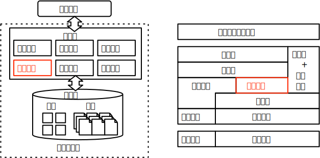

实验 3:多版本并发控制
实验概述
并发查询处理是数据库系统维持高效率、高性能运行的必要条件。但是在并发查询处理中不可避免地会遇到不同事务同时访问相同数据区域的情景，可能发生读写或写写冲突。虽然严格按照读写锁的机制执行查询可以保证查询处理的绝对正确性，但是频繁地加锁将让查询性能受到严重限制。为了避免读写和写读冲突造成的系统阻塞，多版本并发控制技术得以发展。通过维持多个版本的记录信息，结合版本可见性的控制，数据库系统可以无阻塞地处理读写和写读冲突。
并发控制信息的维护和记录可见性分析是本次实验的难点。多版本并发控制依赖于记录所额外存储的版本信息，这要求在记录发生变更时需要同时更新记录的版本信息，同时需要实现记录级别或者页面级别的锁机制来应对写写冲突。在多版本并发控制的架构中，单个记录可以同时维持多个不同的版本来应对不同的事务上下文环境，读取的效率一方面要求系统能够根据版本信息和事务上下文快速确定不同记录版本对于特定事务的可见性，另一方面随着记录版本数量的增加，高效的记录查找机制和过期数据的清理机制才能保证查询性能不会受到严重的负面影响。本次实验要求补全解决读写和写读冲突的多版本并发控制，以及两阶段锁协议解决基本写写冲突，而涉及死锁问题的复杂写写冲突以及垃圾回收机制作为可选的高级功能。

实验目标
本次实验要求完成如下基础功能：
- 多版本并发控制：修改数据表的增删改查操作，添加版本信息的记录以及记录对于事务的可见性判断。
- 不同隔离级别的实现：通过设置 isolation_level 参数，控制事务的隔离级别，本次实验你需要实现读已提交、可重复读和可串行化事务隔离级别。
- 两阶段锁：补全锁管理器和算子的锁申请，实现强两阶段锁协议，解决并发查询处理中的写写冲突问题。
在基础功能之上，实验框架支持完成以下高级功能：
-
写写冲突的死锁处理：实验框架和测例没有涉及并发查询中写写冲突可能导致的死锁问题，加入死锁预防或死锁检测机制来解决死锁问题。
-
基于版本链的垃圾回收：基于 MVCC 版本链对旧版本数据进行回收。
关联知识点
本次实验关联并发控制章节，重点涉及以下知识点：
- 多版本并发控制：本次实验需要充分理解多版本并发控制的原理与实现思路。
- 两阶段锁协议：写写冲突的处理将涉及到悲观并发控制的强两阶段锁、意向锁等内容。
相关代码模块
本次实验涉及到代码中以下功能模块：
-
table：数据表相关类。
- table：修改实验 1 中记录的增删改接口，添加版本信息。
- table_scan：添加判断记录对事务可见性的接口，并修改查询函数。
-
transaction：事务相关类。
- lock_manager：锁管理器，负责管理事务锁，需要补充表级别、行级别加解锁函数以及相关辅助函数。
-
excutors：执行器相关类。
- seqscan_executor：需要补充获取活跃事务列表的功能。
- insert_executor：添加插入的写事务锁。
- delete_executor：添加删除的写事务锁。
- update_executor：添加更新的写事务锁。
- lock_rows_executor：添加行级锁。
基础功能需要补充约 100 行代码，本次实验依赖于实验 1 及实验 2 任务 1，请确保完成上述任务再开始本次实验。
相关功能模块的示意图如下：
 |
|